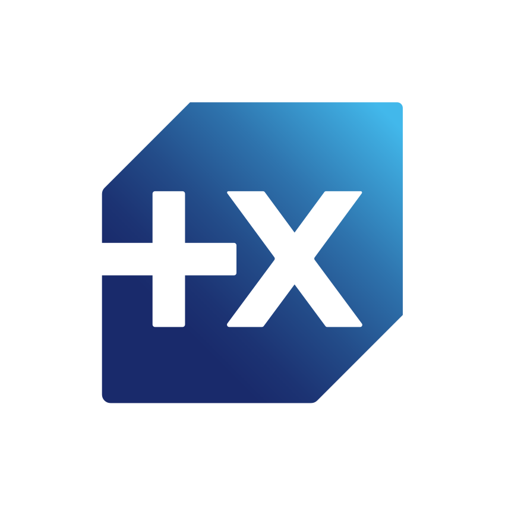

Own your wealth data.
Every single byte.
Your personal finance dashboard, hosted directly on your machine. Simple, private, and automatic.



Banque PopulaireExplore the Interface
Live aggregated net worth and multi-asset allocation.
100% Self-Hosted
All accounts, credentials, and transactions remain strictly on your machine. Zero third-party cloud.
Direct Bank Sync
Directly connect your banking portals without subscription intermediaries or third parties.
Encrypted Vault
All stored credentials and sensitive tokens are encrypted locally with symmetric cryptography.
Instant Speed
Fast response times and zero cloud latency with a light local architecture and SQLite database.
Engineered for Performance & Zero Leakage
Next.js 16 & React 19
Built with Next.js App Router, Tailwind CSS, and Shadcn UI components for instant rendering, smooth transitions, and offline capability.
FastAPI & Python 3.11+
High-throughput asynchronous REST API powering secure authentication, automated background scheduling with APScheduler, and transaction normalization.
Woob Bank Connectors
Direct open-source banking integration engine querying European and French financial institutions directly from your IP address without intermediary cloud aggregators.
Privacy & Control Comparison
| Capability | Finly (Self-Hosted) | Cloud FinTech Aggregators |
|---|---|---|
| Data Storage | Local SQLite DB on your machine | Shared Multi-Tenant Cloud DB |
| Banking Credentials | Encrypted AES-256 Fernet (Local Key) | Stored on 3rd-party SaaS servers |
| Financial Data Monetization | Never (No telemetry / tracking) | Aggregated & anonymized ad sales |
| Subscription Cost | Free & Open-Source (MIT) | Recurring Monthly/Annual Subscriptions |
| Direct DB Export / SQL Access | Full unlimited access (Native SQLite) | Restricted / Proprietary Lock-in |
Get Started with Finly
Download the standalone desktop application for instant zero-configuration use, or deploy with Docker on your local server.
Windows
Recommended v1.0.26Native Windows desktop application. Includes automated background installer, Start Menu shortcuts, and embedded local database.
macOS (Apple Silicon & Intel)
Native Apple Disk Image (.dmg) with drag-to-Applications installation, or universal portable zip archive for macOS 12+.
Linux (x64)
Debian / Ubuntu installation package (.deb) with desktop integration, or standalone portable universal tarball.
Frequently Asked Questions
Everything you need to know about Finly, security, banking connectors, and self-hosting.
What is Finly and how does it differ from cloud aggregators?
Finly is an open-source, 100% self-hosted wealth tracking and budgeting engine. Unlike cloud SaaS products (such as Finary, Bankin, or Mint) that monetize data or require recurring subscriptions, Finly runs entirely on your local hardware. All database queries, credentials, and transaction analyses stay within your control.
How does direct bank synchronization work without cloud servers?
Finly uses Woob (Web Outside of Browsers), a proven open-source multi-bank protocol engine. The sync process queries banking endpoints directly from your own IP address over TLS, eliminating the need for intermediate SaaS bridge servers or third-party credential brokers.
How are my banking passwords and tokens secured?
All bank connector configurations and authentication tokens are encrypted locally with AES-256 Fernet symmetric cryptography using a unique local encryption secret. No telemetry or credentials ever leave your physical device.
Which operating systems and deployment modes are supported?
Finly is available as a standalone desktop application for Windows 10/11 (.exe installer and portable), macOS (.dmg universal for Apple Silicon and Intel), and Linux (.deb and tarball). It can also be deployed headlessly via Docker Compose on a Raspberry Pi, Synology NAS, Unraid, or private VPS.
Can I export and own my raw financial transaction data?
Yes. Finly provides client-side Excel spreadsheet and PDF report exports, along with raw, direct SQLite database access so you can query your historical data with Python, SQL, or BI tools at any time.